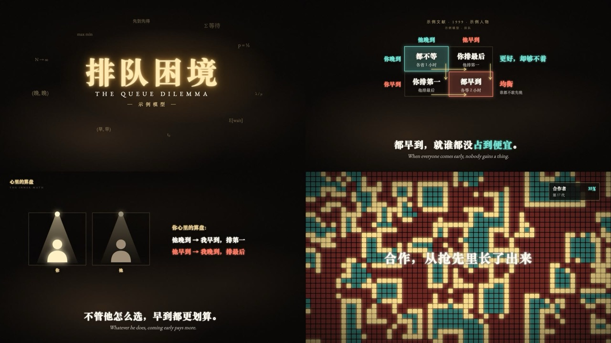

适用：比较 / 博弈 / 分支
矩阵先显示行动与收益，再用箭头解释选择；同一节点进入分支树。
在我们这里如何使用：不能用金光替代证据；屏幕同时高亮一个决定。

来自 weilanx README。其作品预览、配方与组件已保存；作者原配音、真人素材和音乐并未在上游公开。
矩阵先显示行动与收益，再用箭头解释选择；同一节点进入分支树。
在我们这里如何使用：不能用金光替代证据；屏幕同时高亮一个决定。
讲博弈论、经济学、认知、冷知识、AI 原理这类「一个模型解释一种现象」的横屏 16:9 风格：近黑底上一层缓慢翻涌的暖色烟雾，所有东西都在发光——金色粒子聚成标题，霓虹细线画出收益矩阵和曲线，聚光灯打在发光的小人身上，底部中英双语字幕。画面语法是从两支参考视频里拆出来的（参考视频不进 git），组件和示例都是重写的，没有沿用原片的内容、文案、创作者名字和水印。
一键成片：给一个选题，用 skill weilanx-creator-blackgold-video（.claude/skills/weilanx-creator-blackgold-video/）从查资料一路做到成片 + 3:4 封面 + 发布文案 + 双语字幕稿，样片 ep36。
和 暗金文献风 的区别：暗金是「烛光下翻古籍」，金线 + 衬线 + 羊皮纸、偏历史；黑金光影是「暗房里做实验」，烟雾 + 霓虹描边 + 聚光灯、偏模型和数据，颜色有三种固定语义。
Songti SC 900），英文 / 小标用 Garamond（大写字母宽字距 0.35em），英文字幕 Garamond 斜体| 文件 | 组件 |
|---|---|
src/library/blackgold/theme.ts |
配色 B、字体 BF、glowText 发光字、neon 霓虹描边、blurIn 模糊柔入、drawP 线条画出进度 |
src/library/blackgold/stage.tsx |
SmokeBg 烟雾底（tone 暖 / 红）、Grain、BGCaption 双语字幕、ChapterTag 左上章节签、CiteLine 顶部引用行、CenterWord 居中发光大字、SparkTitle 粒子聚成的标题卡、FormulaField 漂浮公式、Fade、GlowSmash 重拍砸字、TickRing 表盘刻度环 |
src/library/blackgold/props.tsx |
Spotlight 聚光灯、GlowPawn 发光小人（亮 / 暗 / 青 / 红）、Booth 审讯室小间、Silhouettes 剧场观众剪影（可逐排站起）、Stage 剧场舞台、GlowCard 霓虹描边卡片、Awning 小店雨棚卡 |
src/library/blackgold/charts.tsx |
PayoffMatrix 收益矩阵（箭头依次画出、格子高亮）、GlowBars 发光柱状图、TileSeq C/D 方块序列、CellGrid 细胞网格（确定性演化）、DotRing 光点网络环、NeonLines 霓虹折线图（交点发光、渐近虚线）、BalanceScale 天平、PelletStack 食粒柱（可视化加减）、Ledger 对账卡 |
src/library/blackgold/pen.tsx |
GlowPigG 会呼吸 / 眨眼 / 流汗 / 打呼的发光猪、PigPen 拉杆—食槽猪圈（冲击波、浮尘、倒影、灯闪）、track 角色跑位、ShockG、LightMotesG |
src/library/blackgold/（目录见 src/library/README.md「黑金光影风」一节）library-blackgold（src/library/previews/BlackGoldDemo.tsx）Ledger），让观众亲眼看到结论（大猪吃得多、跑得也多，净得始终和小猪一样）。BalanceScale），「减法」用食粒变成汗珠飞走（PelletStack）。| 期 | 题 | 用到的组件 |
|---|---|---|
| ep38-butterfly | 蝴蝶效应：一只蝴蝶，真能掀起龙卷风吗 | chaos.tsx：GlowButterflyG + RipplesG + TornadoG（开场）、PrintoutTape（1961 抄写）、TrailPathG（两次天气、吸引子，自己算的）、ForecastStrip（回落段 11 天预报）、GullG；GlowSmash + 分叉光线（「差一点」） |
| ep36-boxed-pigs | 智猪博弈：躺平的小猪吃得更多 | PigPen + GlowPigG（全片同一个猪圈）、SparkTitle（instant）、PayoffMatrix + BalanceScale（矩阵收尾推进纳什均衡那一格、落进猪圈）、Ledger（回落段 11 下硬拍对账）、TickRing + GlowSmash（「等」）、PelletStack（6 − 2 = 4） |